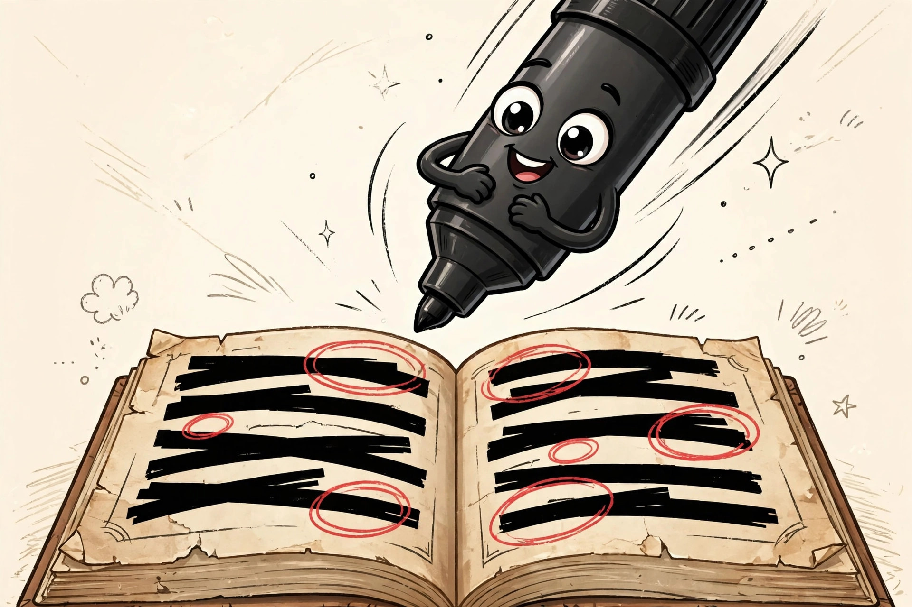
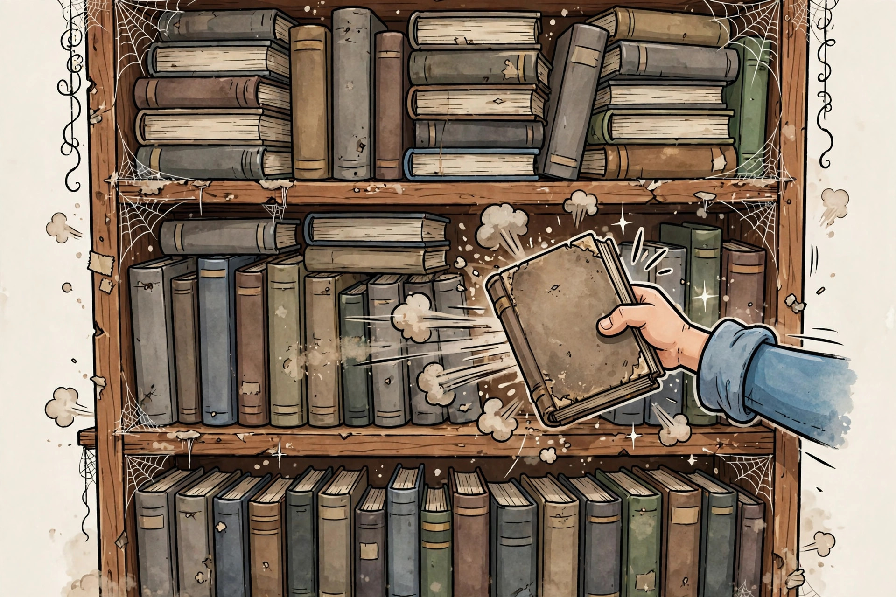

Blackout Poetry: Your Textbook's Second Career as Literature

Blackout poetry — also called erasure poetry — is a simple, viciously satisfying art form: take a page of printed text, choose the words you want to keep, and black out everything else with a marker. What remains is a poem the original author never intended. People usually make it from novels and newspapers. We propose a harder canvas: the textbook. Dense academic prose, two-column layouts, diagrams of things you never understood — the textbook is the final boss of blackout poetry, and defeating it is glorious.
The decision framework: which textbook to sacrifice
Not every textbook deserves the marker. Run your shelf through this framework before committing:
1. Prose density. The ideal victim has long paragraphs of running text — the humanities and social sciences are gold mines. A page that is 80 percent equations or diagrams gives you nothing to work with. Flip through and count words per page, not formulas.
2. Paper finish. Matte, uncoated paper takes marker ink cleanly. Glossy coated stock — the kind with full-color photos — can make ink sit on the surface and smear. Test on a back page first, always.
3. Layout simplicity. Single-column pages are beginner territory. Two-column layouts, sidebars, and footnotes are advanced: you can read across them, but your poem has to fight the page design for attention.
4. Emotional distance. Never sacrifice a book you still need, might sell, or feel guilty about. The best candidates are the ones you kept out of pure inertia — the guilt is the point, and the poem is the exorcism.
5. One sacrificial page. You do not need to commit the whole book. One page is a complete artwork. The rest of the textbook can go back to holding up the shelf.
Picking the page
Skim for pages with strong verbs and concrete nouns — a case study, a historical narrative, a chapter introduction. The driest material often hides the best words: "collapse," "revolution," "unintended," "finally." Avoid glossaries, indexes, and anything with more numbers than sentences. If a page makes you feel nothing after three readings, move on; the page is telling you something.
The marker question
Every guide says "grab a thick black marker" and stops there, so here is the part they skip: textbook paper varies. Matte, uncoated pages are the friendly case; on coated glossy stock — the kind with full-color photos — test on a back page first and give the ink a full minute to set before touching it. A chisel tip is the practical choice for blacking out whole pages quickly. Keep a pencil handy for the drafting stage and a fine-tip marker for circling keeper words before you commit to the blackout. The pencil is for thinking; the marker is for consequences.
Keep a pencil handy for the drafting stage and a fine-tip marker for circling keeper words before you commit to the blackout. The pencil is for thinking; the marker is for consequences.

The method
Step 1: Read the page several times. You need to know what you are working with before you start destroying it. Read it twice through, then scan for words that jump out — your anchor words.
Step 2: Circle candidates in pencil. Lightly circle or underline every word that might make the poem, including the small connecting words (and, the, of, in) you will need to hold it together. Knowing where your conjunctions and strong verbs are is half the craft.
Step 3: Draft the poem in order. List your circled words on a separate sheet in the order they appear on the page. Read them aloud. Cut mercilessly. Blackout poems are usually read top to bottom, left to right, so keep the reading order clean.
Step 4: Black out everything else. With your thick marker, block out every word you are not keeping. Work steadily and keep your keeper words clean — a slip of the marker is permanent, which is thematically appropriate for poetry about textbooks.
Step 5: Decorate (optional). Doodles, borders, and illustrations in the margins turn a blackout poem into a full art piece. The textbook's diagrams are free clip art. Use them.
What success looks like
A finished page where a stranger can read your poem top to bottom without squinting, the blackout is solid with no ghost words showing through, and at least one line surprises you. If the poem is about the textbook itself — "the market finally collapsed under its own weight," found in an economics chapter — you have achieved the highest form of the art: the book reviewing itself.
The supplies cost
The economics are nearly as satisfying as the poetry. A 12-pack of Sharpie chisel-tip permanent markers in black listed at $19.99 CAD at Staples (price checked October 10, 2026) — and you need exactly one marker, which you probably already own. The textbook was free, because you already paid for it years ago and have been paying rent on its shelf space ever since. Total project cost: somewhere between $0 and the price of a marker you will use for a hundred other things.